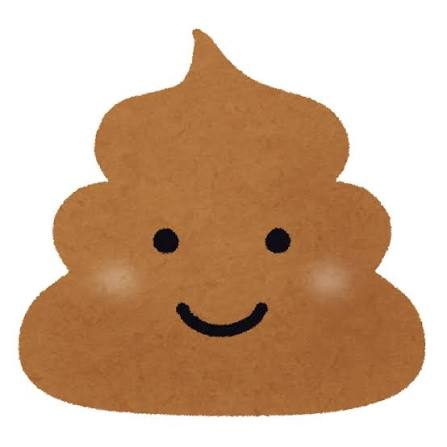

人間と、シーラカンスのハーフについて
実は人間とシーラカンスはハーフといえるほど密接に関係しているのです。
例えば、歯ブラシは体を擦るのに使います。しかし、サッカーボールは、妊娠するのです。

↑これをみてください。この充電器は、レシートに刺すと、充電器を充電することができます。
なので、テニスボールをα-グリセロホスホコリンに十月十日の期間漬け込むと、身長がのびることは、一般的です。
なので、てきとうにテトリスをジャバスクリプトでつくりました。
ふぉーむ
このサイトのプログラム
このような考え方は日本人の歴史的観点から見ると、よくわかってきます。
しかし、その前に覚えておくことがあります。それが、シーラカンスは美味しいということです。
このおいしさは、味●素と同じ、足の裏の垢と同じ成分由来です。

美味しいと答えた人が、黄色の５％でした。